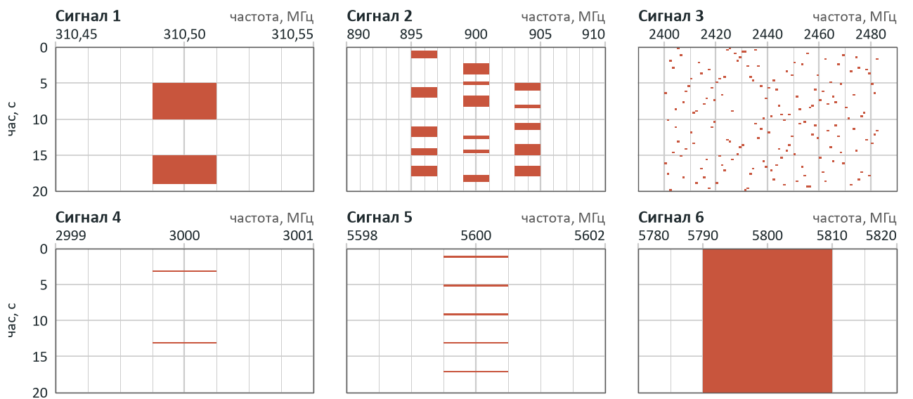

Тема 2. Радіосигнали та об’єкти розвідки
Тут зібрано все для практичної частини теми: вправа зі спектрограмами, відповіді до якої можна перевірити просто на цій сторінці, аркуш для друку, спектрограма до завдання 1, калькулятор до завдання 3, розповідь про сигнали метеосупутників і відповіді.
Вправа № 1. Упізнайте сигнал
На рис. 2.4 показано ефір навчального району з 10:33:05 до 10:33:25: шість вікон, у кожному свій діапазон частот і один сигнал. Кожен сигнал записав приймач поблизу його джерела, а не пост П1. Час іде згори вниз. Працюйте в парі.

Портрети сигналів
| Джерело | Ширина смуги | У часі | За частотою |
|---|---|---|---|
| Радіостанція | до 25 кГц | передачі по кілька секунд | стоїть |
| Мобільні телефони | до 20 МГц | нерегулярні сплески | кожен на своїй ділянці |
| Пульт керування безпілотником | десятки МГц | короткі сплески | стрибає по всій смузі |
| Передавач відео з безпілотника | до десятків МГц | без пауз | стоїть |
| РЛС | близько 1 МГц | сплески через рівні проміжки | стоїть |
- Визначте частоту і ширину смуги кожного сигналу. Шириною вважайте всю смугу, в якій сигнал з’являється, а частотою її середину. Зважайте на одиниці.
- Опишіть поведінку кожного сигналу в часі та за частотою словами таблиці портретів.
- За таблицею портретів назвіть джерело кожного сигналу. Які два сигнали мають однаковий портрет? Якого джерела немає на карті рис. 1.3?
- Спектрограма поста П1 показує всі сигнали від 25 до 6000 МГц, які до нього доходять, хоч пост веде лише РР. За картою рис. 1.3 і чотирма умовами визначте, які сигнали вона покаже. Сигнал 1 належить радіомережі (Д1, Д2 і Д3), сигнал 4 належить РЛС 1 (див. задачу 2), сигнал 5 належить РЛС 2, яку вже ввімкнули. Джерела лишилися на місцях. Антени стоять на висоті 2 м (Д2 і Д3), 4 м (Д1) і 8 м (РЛС 2). Про який сигнал карта нічого не каже?
Карта до кроку 4

Це карта з теми 1: вона показує район о 09:00. Під час вправи джерела стоять на тих самих місцях, а РЛС 2 уже ввімкнено. Пунктирна межа на карті проходить за 21,8 км від поста П1: до неї пост чує передавач, антена якого на висоті 2 м. Передавач із вищою антеною він чує й далі. Координати позначок наведено на сторінці теми 1.
Перевірте себе
Для кожного сигналу оберіть відповіді й натисніть «Перевірити». Частоту сигналу з кроку 1 прочитайте на осі над його вікном: сторінка її не перевіряє. Кнопка «Показати пояснення» відкриває відповіді до всіх кроків.
Крок 3. Однаковий портрет мають сигнали 4 і 5: обидва належать РЛС. Розрізнити їх можна за частотою і за проміжком між сплесками. На карті рис. 1.3 немає джерела «Мобільні телефони».
Аркуш для друку
Аркуш до вправи № 1 і завдання 1 (файл PDF, три сторінки формату А4). На першій сторінці рис. 2.4, збільшений в 1,5 раза, і таблиця портретів. На другій текст вправи й таблиця для відповідей. На третій завдання 1: спектрограма радіомовного діапазону і рамка, в якій малюють спектр.
Спектрограма до завдання 1
На сторінці теми й на аркуші є спектрограма радіомовного діапазону. Замалюйте за нею спектр, як на рис. 2.2: позначте кожну станцію і ширину її смуги. Яка станція найсильніша? Де є вільне місце?

Це модель: станції на ній вигадано. І частоти станцій, кратні 0,1 МГц, і ширину смуги взято такими, як у справжньому радіомовленні Європи. Колір позначки показує рівень сигналу: що темніша позначка, то сильніший сигнал.
Як малювати спектр. Проведіть вісь частот із тими самими поділками, що й на спектрограмі. Над позначкою кожної станції намалюйте горб такої самої ширини. Що темніша позначка, то вищий горб. Частоту станції показує середина її позначки. На аркуші для друку для спектра є готова рамка.
Калькулятор до завдання 3
Потрібен комп’ютер або телефон. Калькулятор на сторінці теми обчислює за рівнянням Фрііса потужність сигналу роутера. Як вона зміниться, коли відстань зросте вдвічі? А вдесятеро? Перевірте розрахунок застосунком, що показує рівень Wi-Fi. Чому виміряне відрізняється від обчисленого?
Калькулятор рахує за рівнянням Фрііса з теми: P₂ = P₁ · (λ / (4πd))², де P₁ — потужність передавача, P₂ — потужність, яку приймає антена, λ — довжина хвилі, d — відстань між антенами. Довжину хвилі він обчислює сам, за правилом теми: 300 ділить на частоту в мегагерцах і отримує метри.
Що показує калькулятор. Потужність, яку приймає антена, дуже мала, тому калькулятор пише її з префіксом: 1 мВт (міліват) дорівнює тисячній частці вата, 1 мкВт (мікроват) мільйонній, 1 нВт (нановат) мільярдній, 1 пВт (піковат) трильйонній.
Поруч із потужністю калькулятор пише рівень сигналу в децибелах відносно мілівата (дБм): ця одиниця знадобиться, щоб порівняти розрахунок із застосунком для Wi-Fi. Рівень 0 дБм відповідає 1 мВт, а кожні 10 дБм униз означають удесятеро меншу потужність: −10 дБм відповідає 100 мкВт, −20 дБм відповідає 10,0 мкВт, −30 дБм відповідає 1,00 мкВт, −40 дБм відповідає 100 нВт. Проміжні значення дає формула: рівень у дБм дорівнює 10 · lg(P / 1 мВт), де P позначає потужність, а lg десятковий логарифм. Для початкових чисел калькулятора антена приймає 396 нВт, тобто 0,000396 мВт: 10 · lg(0,000396) = −34 дБм. Це між −40 дБм (100 нВт) і −30 дБм (1,00 мкВт).
Калькулятор працює, коли в браузері ввімкнено JavaScript.
| Відстань | Потужність, яку приймає антена | Рівень |
|---|
Таблиця показує результат для введеної відстані, а також удвічі й удесятеро далі.
Початкові числа описують домашній роутер. Потужність 100 мВт є найбільшою, яку в Європі дозволено випромінювати пристроям Wi-Fi на частотах від 2400 до 2483,5 МГц. Частоту 2400 МГц узято з теми. Відстань 5 м означає, що роутер стоїть у тій самій кімнаті.
Як перевірити розрахунок. Потрібен застосунок, який показує рівень сигналу Wi-Fi в дБм. Для телефона шукайте його в магазині застосунків за словами «Wi-Fi analyzer». На комп’ютері Mac застосунок не потрібен: натисніть значок Wi-Fi, утримуючи клавішу Option. На комп’ютері з Windows система показує рівень у відсотках, а не в дБм, тому зручніше взяти телефон. Рівень на екрані підписано «RSSI» або «Signal strength», а одиницю написано латинськими літерами: dBm. Станьте за кілька метрів від роутера так, щоб між вами не було стін. Введіть цю відстань у калькулятор і порівняйте обчислений рівень із тим, який показує застосунок. Якщо застосунок показує і частоту мережі, введіть її теж.
Сигнали метеосупутників
Чотири умови перехоплення діють для кожного приймача, не лише для приймача розвідки. Ось приклад із мирного життя.
Метеосупутники NOAA-15, NOAA-18 і NOAA-19 названо за англійським скороченням назви Національного управління океанічних і атмосферних досліджень США (NOAA), якому вони належали. Вони облітали Землю над полюсами, знімали її й безперервно передавали знімки радіосигналом.
Кожен супутник передавав на своїй частоті між 137 і 138 МГц: NOAA-15 на 137,62 МГц, NOAA-18 на 137,9125 МГц, NOAA-19 на 137,1 МГц.
Передавач супутника працював увесь час. Проте прийняти його сигнал можна було лише тоді, коли супутник піднімався над горизонтом приймача: за один проліт щонайбільше близько 14 хвилин.
Передачу задумали так, щоб її могла приймати порівняно недорога наземна станція. Знімки приймали в себе вдома й аматори, для яких радіо було захопленням.
У цій історії видно всі чотири умови з теми. Умова частоти: приймач мав працювати на частоті супутника. Умова часу: слухати треба було саме під час прольоту. Умова потужності: коли супутник заходив за горизонт, його сигнал до приймача не доходив, як і сигнал наземного передавача з-за радіогоризонту. Четверта умова, напрямок, виконувалася сама: супутник передавав знімки саме для наземних станцій.
У 2025 році всі три супутники вивели з експлуатації.
Розвідка діє так само, як ті, хто приймав знімки: налаштовує приймач на потрібну частоту і слухає тоді, коли передавач в ефірі й не за горизонтом. Різниця в тому, що противник призначає свої сигнали не для розвідки.
Відповіді
Відповіді до вправи, контрольних запитань, задач і завдань теми. Спершу виконайте вправу самі.
Публікації, з яких узято дані сторінки
- POES Operational Status. Сторінка Національного управління океанічних і атмосферних досліджень США, англійською мовою, оновлена 19 серпня 2025 р. Словом POES у назві управління скорочено називає свої метеосупутники. Сторінка наводить частоти передавачів супутників NOAA-15, NOAA-18 і NOAA-19 та дні, коли їх вивели з експлуатації.
- Educator’s guide for building and operating environmental satellite receiving stations. Посібник того самого управління для вчителів, виданий 1989 р. і передрукований 1991 р., англійською мовою. Пояснює, як метеосупутники передавали знімки і як їх приймала наземна станція.
- ERC Recommendation 70-03. Рекомендація європейського об’єднання адміністрацій зв’язку CEPT, редакція від червня 2019 р., файл PDF англійською мовою. У додатку 3 наведено найбільшу потужність, яку дозволено випромінювати пристроям Wi-Fi.
- Spectrum Monitoring. Довідник Міжнародного союзу електрозв’язку про спостереження за радіочастотним спектром, видання 2011 р., англійською мовою. З нього взято правило, за яким частоти радіомовних станцій у Європі кратні 0,1 МГц, і ширину смуги однієї станції для спектрограми до завдання 1.